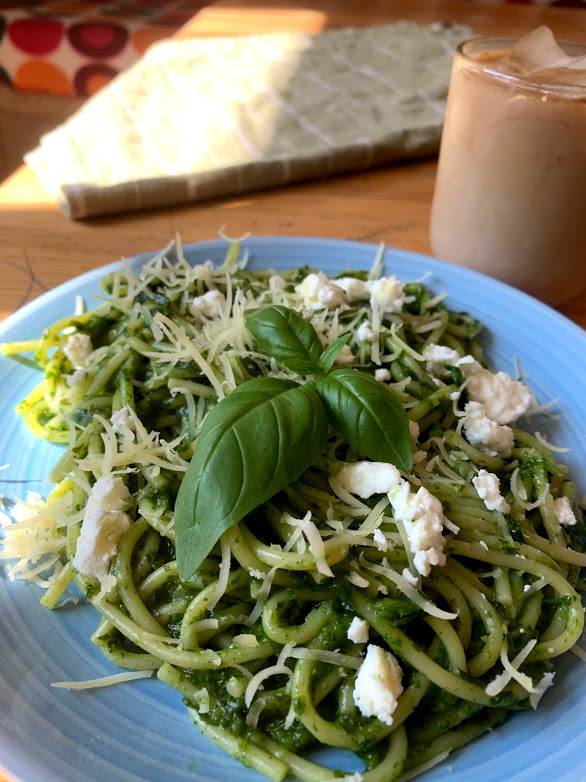

Bread
Bread for everything! Are you agree with me? I have a very simle recipe of home-made bread and I want it to be the first one on this page.Ingredients: cup of warm water, 3 cups of flour, 1 Ts of salt, 1 Ts of of sugar, 1.5 ts of yeast, and 3 Ts of oil ( you can also add seeds ).
1. Mix water, sugar, yeast, and leave it for 5-10min.
2. Mix flour and salt ( you can add seeds at this step ). Add water (step 1 ) and oil to the flour.
3. You might need a little bit more flour to knead the dough but do not add to much. You need to knead the dough for 10 min till the dough doesn't stick to your hands.
4. Put the bowl, cover it with plastic bag and a towel. Now you are free for 1.5-3 hours until the dough is doubled in size. You can even leave it over night in a fridge but make sure you cover it very well, othrwise it wil "run away"!
5. Ones the dough is doubled in size you can put it in a frame or give your bred any size you want. Bake it 40-45 min 180 C. My tip for crispy crust you can put a bowl with some water in the oven
P.S. you can use this dough for pizza as well ; ) That's it! Enjoy your bread!
Let me know how you try it on Instagram with a tag #bread_lp

Kale Pasta
First of all, I love to cook pasta because it takes no more than 15 min to cook. Kale+pasta is the beeest combination.
Ingredients: kale, pasta ( my favorite is spaghetti Barilla #5 ), gralic, your favorite spices, any cheese, and basil (if you have/like it )
1. Boil your pasta based on the instructions on a package.
2. Add to the water, where you boil your pasta kale ( wash it and remove a stick) and 2-3 cloves of garlic.
3. Take out the kale and garlic from the boiling water and blend it with basil, salt, peper, and your favorite spises.
4. When your pasta is boiled, mix it with kale souce.
5. I like to add feta cheese and some basil on the top.
Improvise and enjoy your pasta!
Let me know if you try it on Instagram with a tag #pasta_lp
Pancakes
This is a very simple, fast, and delisious breakfast. Usually it takes 20 minutes to make the dough and make the pancakes. You can also make the dought in the evening and leave it in a frige till you wake up and bake fresh pancakes.
The ingredients: 1 cup of milk, 1 egg, 1 cup of flour, 1 Ts oof suga, 1 ts of baking pouder, 1 pinch of salt, and 1 Ts of oil.
Just mix everything in a bowl and the dought is ready!
Bake the pancakes 1-2 min on each side on a frying pan with a drop of oil.
Add some fruit, jelly, or chocolate souce and enjoy your pancakes!
Let me know if you try it on Instagram with a tag #pancakes_lp